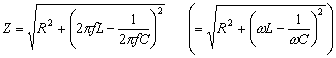
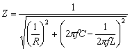

LRC串聯/並聯電路阻抗
程式編寫日期: 2006年5月23日
| 0 | X | A | + | B | yx | ( | 4 |
| X | - | 2 | ) | + | ( | ( | 2 |
| π | A | C | ) | yx | ( | 2 | X |
| - | 1 | ) | - | ( | 2 | π | A |
| D | ) | yx | ( | 1 | - | 2 | X |
| ) | ) | x² | ) | yx | ( | X | - |
| 0 | . | 5 | ) | STO F1 或 F2 | |||
LRC 串聯電路公式

LRC 並聯電路公式

例題1: 在LRC串聯電路中，若頻率為50Hz，電阻為2Ω，感抗為0.07H及容抗為25μF (25×10-6F)，
電路的阻抗。
按 RCL F1 ALGB 1 = (1代表計算串聯電路) 50 = 2 = 0.07 = 25 EXP 6 +/- =
(顯示阻抗Z為105.3518Ω)
例題2: 在LRC並聯電路中，若頻率為50Hz，電阻為2Ω，感抗為0.07H及容抗為25μF (25×10-6F)，
路的阻抗。
按 RCL F1 ALGB 0 = (0代表計算並聯電路) 50 = 2 = 0.07 = 25 EXP 6 +/- = (顯示 阻抗Z為1.99436Ω)